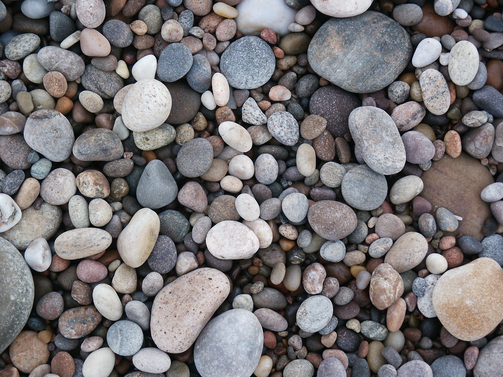
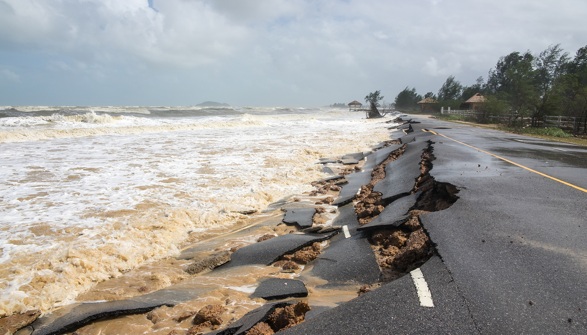
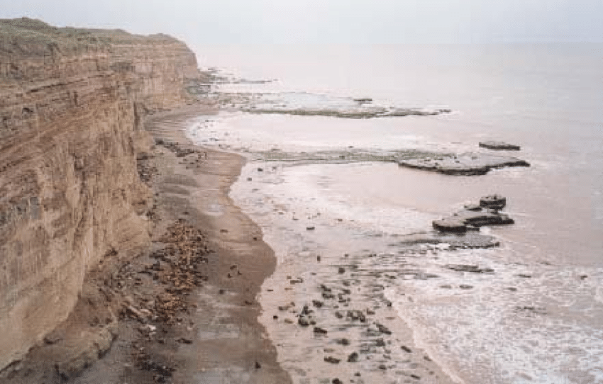
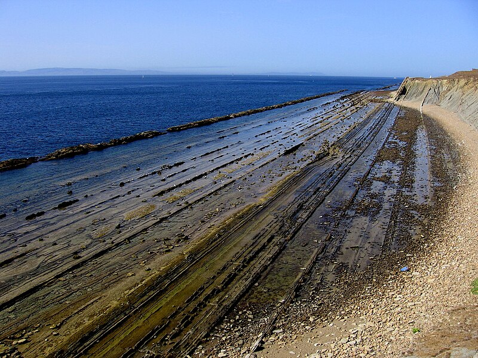

Causas de la Erosión Costera
La Erosión Costera es causada por varios factores naturales, algunos condicionados por los humanos. Fuerzas naturales como las olas, mareas, huracanes, etc., chocan con las rocas y piedras, efectivamente deformándolas o desplazándolas. Normalmente, esto se podría considerar como un desarrollo natural y nada para preocuparse. Pero factores externos causan que este proceso habitual se haga excesivo. El calentamiento global contribuye a esto, causando que los niveles del mar que suban y inclinando la balanza contra las playas. También factores causados directamente por actividad humana contribuyen a la erosión de la playa. El desarrollo de edificios mal planificados, la extracción de los recursos de la playa como la arena y la destrucción de los manglares son unos cuantos de las variables que ponen nuestras playas en riesgo.
Procesos Costeros que contribuyen a la erosión
| Acción hidráulica | La Acción Hidráulica se trata de usar la presión de fluidos para ejercer fuerza. En el caso de la Erosión Costera, esto es cuando las olas chocan con las paredes de rocas, comprimiendo aire en las grietas. Esta fuerza astilla y le quita pedazos progresivamente, ocasionalmente formando cuevas con las grietas." | 
|
|---|---|---|
| Desgaste | El Desgaste costero se produce cuando las olas causan que las rocas sueltas se colisionen entre sí. Esto causa que las rocas se trituren y astillen, haciéndolas más pequeñas en el proceso. También es capaz de eventualmente transformar rocas grandes convertirse en arena. El desgaste puede tener efectos fuertes contra estructuras humanas, dañando su estructura lentamente. |  |
| Solvatación | La Solvatación es el proceso de los ácidos del mar disolviendo tipos de rocas como la tiza o la piedra caliza. Este proceso también tiene efectos peligrosos contra las estructuras humanas, como las calles cerca a la costa. |  |
| Abrasión | Igual que la Acción hidráulica, la Abrasión también usa la presión de las olas contra las rocas. Pero en vez de crear grietas, esta se refiere a las olas rompiéndose contra los acantilados, rompiendo pedazos y usando los mismos para ejercer mas fuerza contra el acantilado. |  |
| Corrosión | La corrosión es la alteración y disolución de materiales en reacción hacia ataques químicos. En este caso se refiere a las olas que chocan con las rocas de acantilados, en cual los químicos del mar las desgasta. Esto también se puede aplicar a estructuras humanas cerca del agua, como vallas u otros objetos creados de metal. |  |